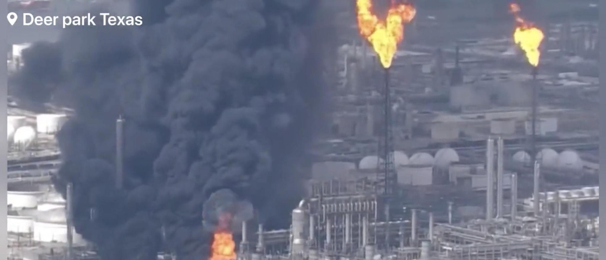

Multiple People Reportedly Injured After Explosion Ignites Massive Fire At Shell Oil Refinery Plant In TexasMultiple people have been injured by an industrial explosion Friday at a Shell refinery plant in Deer Park, Texas, per local reports. It is unclear what caused the explosion and the chemical burning off the refinery plant is not yet known, according to local NBC affiliate KPRC2. Videos circulating on social media show large clouds of black smoke rising from the explosion and multiple fires burning at the facility. Two individuals were injured and the rest of the Shell employees were evacuated from the refinery plant, per local CBS affiliate KHOU11. (RELATED: Video Shows Aftermath Of Massive Explosion After Fuel Tanker Truck Crash In Connecticut) 🚨#BREAKING: Massive explosion at a oil and gas refinery plant with reports of multiple people injured Currently, A large number of emergency crews and other agencies are responding to a massive explosion at a PEMEX oil refinery plant in Deer Park, Texas… pic.twitter.com/1dkJhM995Z — R A W S A L E R T S (@rawsalerts) May 5, 2023 Shell Deer Park officials have chosen not to declare a shelter-in-place as of 4:21PM, the town’s emergency update website states. Those guidelines have prompted schools to continue regularly scheduled student dismissal, citing the fact that wind is blowing the smoke away from the schools. “Emergency officials have not called for a Shelter in Place because the wind is blowing away from the City of Deer Park and our schools. At this point, the incident is not affecting school dismissal, which is taking place according to the regular schedule,” the local school district said on its Facebook page. Harris County Sheriff Ed Gonzalez said on Twitter the Fire Marshall will be leading the response, with multiple agencies engaging in a joint response effort. Our partners @hcfmo will be lead. Unified Command is being established, with multi-agency response. #HouNews https://t.co/VNvdV8KPqg — Ed Gonzalez (@SheriffEd_HCSO) May 5, 2023 “This is the Environmental Duty Representative at Shell Deer Park. We are currently experiencing fire within one of our units. The incident is being handled within the boundaries of this facility and there is no threat to the community from this incident. We apologize for any inconvenience this may cause,” a spokesperson from the Community Awareness Emergency Response Team said in a statement, according to KPRC2. |
 |